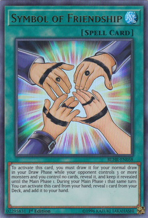
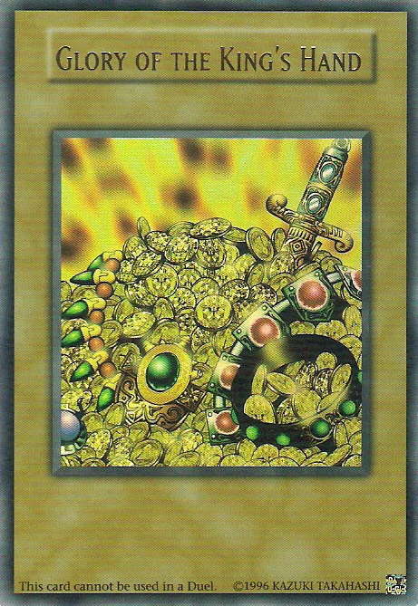

Why duel?
Many a Duelist has wondered why they duel, or some even wonder why should they even bother with dueling. There is no singular answer, and whatever your reason, we are here to guide you on your journey, connecting you with your fellow peers and rivals of tomorrow!
Lifelong Friendships
No matter your skill level, you will find many duelists eager to lend a hand to their peers. Many will meet long time friends from playing this card game, and some even find friendly rivals to try and out compete eachother, helping eachother improve by improving to win! This friendship often extends to outside the game, forging lifelong friendships through common bonds!
Riches
Friendship is nice and all, but many duelists still have to feed their hunger for fame and riches! There are quite a number of tournaments, which often offer both game prizes, as well as cash prizings! Rare tournament prize cards, money, and fame all follow with winning tournaments. As a duelist grows in skill, so too does their reputation!